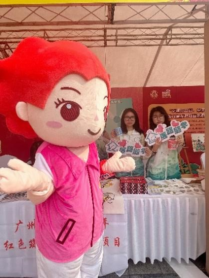
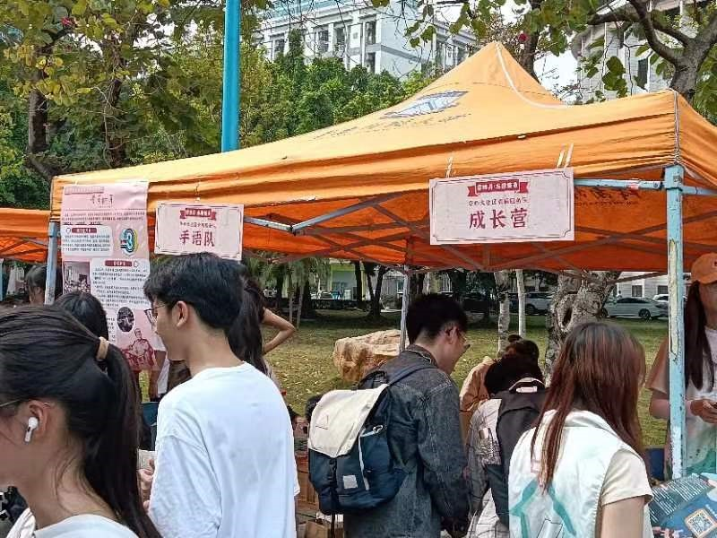
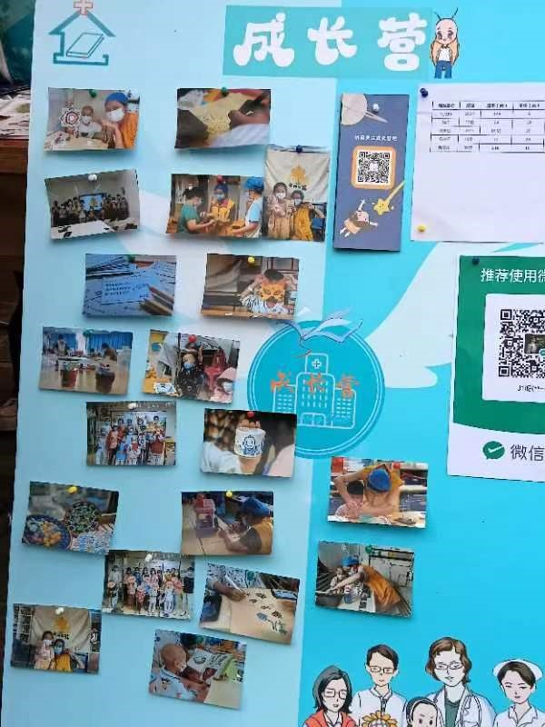
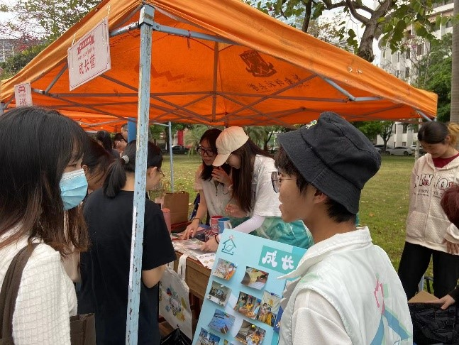
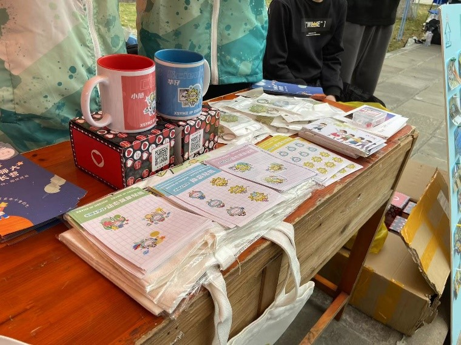
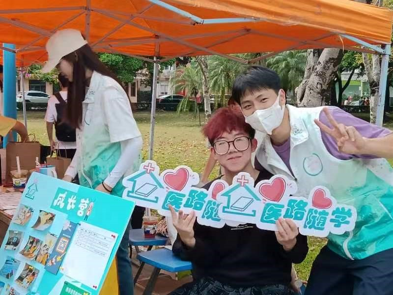

医路故事9
三月暖心摆摊活动回顾
发布于 2023/3/15 21:39 浏览量：132 点赞：1条
三月春风暖阳照
志愿队伍积极到
新一年新目标，华南师范大学成长营迎来了新的月份。
惊蛰已过，志愿者们又有了新的任务，
队员们蓄势待发，为即将迎来的几项活动做足了准备...
春日的天气,
格外温柔，
清风暖阳相随。
歌颂妇女，
广州市妇联主办的“三八”国际妇女节 113 周年暨“我为妇女群众办实事--暖心服务月”主题活动在三月初旬开展， 华南师范大学的志愿者们也与其响应，开展了“在集市里相遇”摆摊活动。
夕阳暖日，
在阳光映照下，
洋溢着妇女们以及志愿者们的欢声笑语。
微风吹过，
队员们手中的宣传册随之打开，
记载着有关患病儿童的科普知识，
给各界人士普及了相关知识。
参与者们通过关注成长营公众号并转发推送获得各样的精美小礼品。
简单并且具有意义
让更多的人了解并关注到了患病儿童
也能加入到我们的支援队伍当中
落日温暖心亦暖
人们屈腰
手上挥动着笔杆
是在干什么呢？
啊！是他们在给患病儿童留下关心与祝福
在无声交流的信中体现了人间的温暖
看，那笑容像花开的志愿者
他们拨开乌云
像阳光一样温暖人心
积极地参与到摆摊活动当中
给妇女们带来温暖
并给人们悉心介绍关于病房的那些事
随着夕阳的落下
活动也圆满结束了
大家仍沉浸在快乐之中,个个意犹未尽
正如这落日消退，但依旧光芒万丈！
三月到来暖阳照，学习雷峰赞歌唱
在当今雷锋精神的影响下，华南师范大学成长营各志愿者受其所发， 决定于石牌校区内举办集市摆摊活动以学习雷锋精神，
经过志愿者对活动的重重的策划和审核，集市摆摊活动在3月9日隆重展开！
这次活动旨在提高人们对于病房患儿的关注度宣传长期为患儿服务的成长营，让病房患儿得到更多支持。
阳光普照，春风和煦。
在集市摆摊活动里，志愿者们都积极参与其中。大家都秉承着“学习雷锋精神，共建美好家园”的信念，在活动开始前就早早到
来搭建场地，还有队员们搬着沉重的礼品陆续抵达了现场，为活动奉献自己的汗水。
微风渐起，行人逐渐多了起来
队员们奋力宣传着自己的集市，积极为每一个止步的人普及关于患儿的知识，传递成长营宣传册留住人们的目光。
不一会，集市里路人们接踵而至。成长营的摊位前有着不少人们驻留， 认识着成长营的项目。成长营还推出了钥匙扣，陶瓷杯等文创精品。所有精品上都有吉祥物小随和华仔的身影！ 在了解更多关于成长营的信息后， 志愿者们还会发放精美的漫画贴纸和明信片，带着人们关注医院患儿，对患儿伸出援手。
病房患儿在医院缺少社交，常常又因病情感到焦虑和抑郁。 通过摊位的明信片，人们可以写下对病房患儿的话语，鼓励小朋友们勇敢战胜病魔， 能带动小朋友们乐观面对生活。爱心播种希望，奉献点亮青春！ 人们把自己的爱心寄托在明信片上，能给孩子们带来支持和动力。
落日余晖行人散去。活动落幕，通过这次集市活动，志愿者们贯彻了雷锋精神。 将助人为乐，奉献精神用行动证明下来，华南师范大学成长营队员们不仅学习了雷锋精神， 更让病房患儿们得到了更多支持，帮助了每一个受病痛折磨的家庭。
随着夕阳的落下
活动也圆满结束了
大家仍沉浸在快乐之中,个个意犹未尽
正如这落日消退，但依旧光芒万丈！
志愿者们用手扇着风
落日的余晖照着人们的汗水
不知不觉活动已经结束，带走了节日的气氛，带走了惬意的时光
但是带不走志愿者们心中那无限的舒畅。
新的一天即将来临，依旧充满阳光，
那是乐观、自信和坚强的光芒。
志愿者们沐浴着阳光，向着夕阳，走在快乐的路上